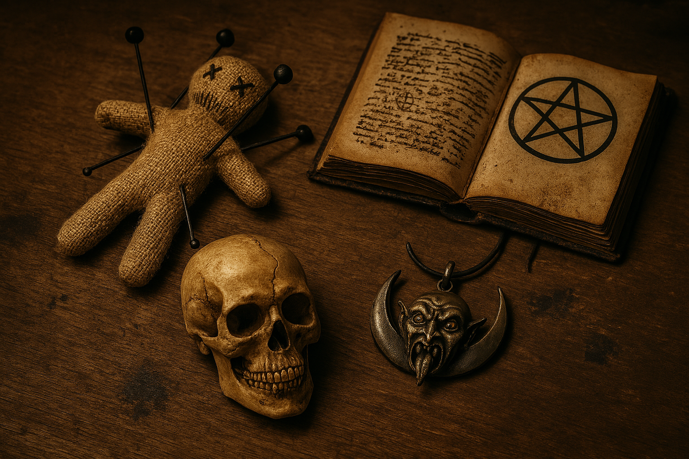
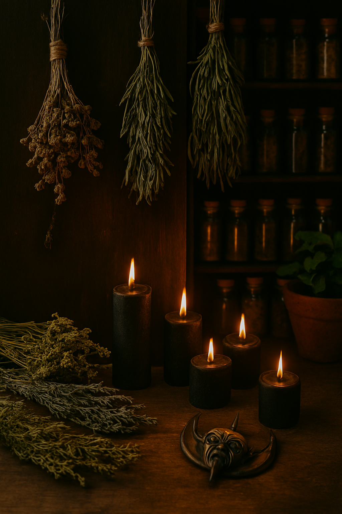

The Salem Oddities & Enchantments
Where Magic Finds Its Keeper
At The Salem Oddities & Enchantments, every relic, herb, candle, and spellcasting tool is chosen with intention. Our mission is simple: to place powerful magic into the hands of those who know how to wield it. Step inside and discover the enchantments waiting for their next keeper.
Witchcraft • Cursed Relics • Arcane Provisions
Step beyond the veil and into The Salem Oddities & Enchantments, a witchcraft shop devoted to the strange, the powerful, and the beautifully haunted. Whether you're a seasoned practitioner or a curious wanderer, our shelves are filled with everything you need to shape your magic.
Who we are and what we do

A mysterious, dimly lit curiosity shop dealing in rare magical artifacts,
ethically sourced bones, enchanted trinkets, and cursed‑object rehabilitation.
They also offer “curse detox” services for tourists who accidentally buy something
they shouldn’t.
A little history about The Salem Oddities & Enchantments
Blackthorn began as a traveling wagon in the early 1800s, run by the enigmatic
witch siblings Cassian and Liora Blackthorn. When they settled in Salem in 1837,
they opened a permanent storefront. Over the years, the shop became known for its
strict ethical code: no stolen relics, no grave‑robbing, and no curses without consent.
The Blackthorn line is said to have died out, but the current owner—who appeared in
Salem seemingly out of nowhere—claims to be a distant relative.